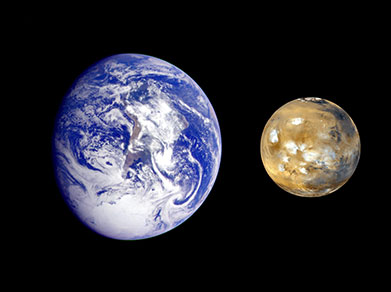

MARS

Mars is the fourth planet from the Sun and the second-smallest planet in the Solar System, being larger than only Mercury. In English, Mars carries the name of the Roman god of war. Mars is a terrestrial planet with a thin atmosphere, and has a crust primarily composed of elements similar to Earth's crust, as well as a core made of iron and nickel. Mars has surface features such as impact craters, valleys, dunes, and polar ice caps. It also has two small and irregularly shaped moons, Phobos and Deimos. Some of the most notable surface features on Mars include Olympus Mons, the largest volcano and highest known mountain on any Solar System planet, and Valles Marineris, one of the largest canyons in the Solar System. The smooth Borealis basin in the Northern Hemisphere covers 40% of the planet and may be a giant impact feature.[19] The days and seasons on Mars are comparable to those of Earth as the planets have a similar rotation period and tilt of the rotational axis relative to the ecliptic plane. Liquid water on the surface of Mars cannot exist due to low atmospheric pressure, which is less than 1% of the atmospheric pressure on Earth.[20][21] Both of Mars's polar ice caps appear to be made largely of water.[22][23] Multiple lines of evidence suggest that Mars was wetter in the distant past, and thus possibly more suited for life. However, whether life ever did exist there, and if it could have survived to the present day, remain unanswered questions. Mars has been explored by several uncrewed spacecraft, beginning with Mariner 4 in 1965. NASA's Viking 1 lander transmitted the first images from the Martian surface in 1976. Two countries have successfully deployed rovers on Mars, the United States first doing so with Sojourner in 1997 and China with Zhurong in 2021.[24] There are also planned future missions to Mars, such as a Mars sample-return mission set to happen in 2026, and the Rosalind Franklin rover mission, which was intended to launch in 2018 but was delayed to 2024. Mars can easily be seen from Earth with the naked eye, as can its striking reddish coloring. This appearance, due the iron oxide prevalent on its surface, has led to Mars often being called the Red Planet.[25][26] It is among the brightest objects in Earth's sky, with an apparent magnitude that reaches −2.94, comparable to that of Jupiter and surpassed only by Venus, the Moon and the Sun.[14] Historically, Mars has been observed since ancient times, and over the millennia, has been featured in culture and the arts in ways that have reflected humanity's growing knowledge of it.

10 Need-to-Know Things About the Mars
SMALL PLANET
If the Sun were as tall as a typical front door, Earth would be the size of a dime, and Mars would be about as big as an aspirin tablet.
FOURTH ROCK
Mars orbits our Sun, a star. Mars is the fourth planet from the Sun at an average distance of about 228 million km (142 million miles) or 1.52 AU.
LONGER DAYS
One day on Mars takes a little over 24 hours. Mars makes a complete orbit around the Sun (a year in Martian time) in 687 Earth days.
RUGGED TERRAIN
Mars is a rocky planet. Its solid surface has been altered by volcanoes, impacts, winds, crustal movement and chemical reactions.
BRING A SPACESUIT
Mars has a thin atmosphere made up mostly of carbon dioxide (CO2), argon (Ar), nitrogen (N2), and a small amount of oxygen and water vapor.
TWO MOONS
Mars has two moons named Phobos and Deimos.
RINGLESS
There are no rings around Mars.
MANY MISSIONS
Several missions have visited this planet, from flybys and orbiters to rovers on the surface.The first true Mars mission success was the Mariner 4 flyby in 1965.
TOUGH PLACE FOR LIFE
At this time, Mars' surface cannot support life as we know it. Current missions are determining Mars' past and future potential for life.
RUSTY PLANET
Mars is known as the Red Planet because iron minerals in the Martian soil oxidize, or rust, causing the soil and atmosphere to look red.
>